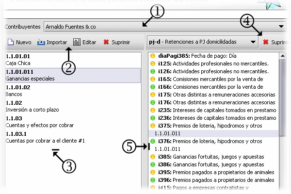

Contabilidad/Clio
Esta opción permite configurar la parte encargada de correlacionar las cuentas o entradas contables con las distintas secciones dentro de las formas fiscales. Aquí, dentro del ámbito de la aplicación, llamaremos cuenta o entrada contable a la información almacenada dentro de la aplicación cuyo código debe ser igual a una cuenta contable parametrizada dentro del catálogo de cuentas de la aplicación contable del contribuyente. Esto permite cargar transacciones en Clio de la misma forma que se cargan dentro de un sistema contable.
Debido que esta interfaz es un poco mas complicada, comenzaremos con una revisión de sus componentes.

- Permite seleccionar el contribuyente al cual se le van a crear la asociación entre las cuentas contables y las secciones de las distintas formas. Para cada contribuyente, existe una lista de entradas contables. Pueden existir cuentas contables de igual código pero en contribuyentes distintos.
- Barra de herramientas para crear y mantener la lista de cuentas contables.
- Lista de cuentas contables creadas para el contribuyente seleccionado.
- Barra de herramientas con un selector para seleccionar las formas disponibles para esta operación y una acción para eliminar las asociaciones entrada-contable / sección. Note que las secciones están identificadas con un bolita de color. La acción de suprimir no borra la sección en si ya que esta forma parte permanente de la forma, solo puede suprimir la asociación.
- Lista de secciones a las cuales se puede asociar una cuenta contables
Es de hacer notar que las secciones pueden interpretar esta asociación de 2 maneras distintas, según su característica. Estas se identifican por el color del icono que las acompañan
 Cuenta: Se cuentan el número de transacciones y se coloca ese resultado dentro de la sección asociada.
Cuenta: Se cuentan el número de transacciones y se coloca ese resultado dentro de la sección asociada.
Total: se sumarizan los montos de cada transacción y la suma total es colocada como valor dentro de la sección.
Ver
Editor de formas
Transacciones
Asociación entrada contable > secciones